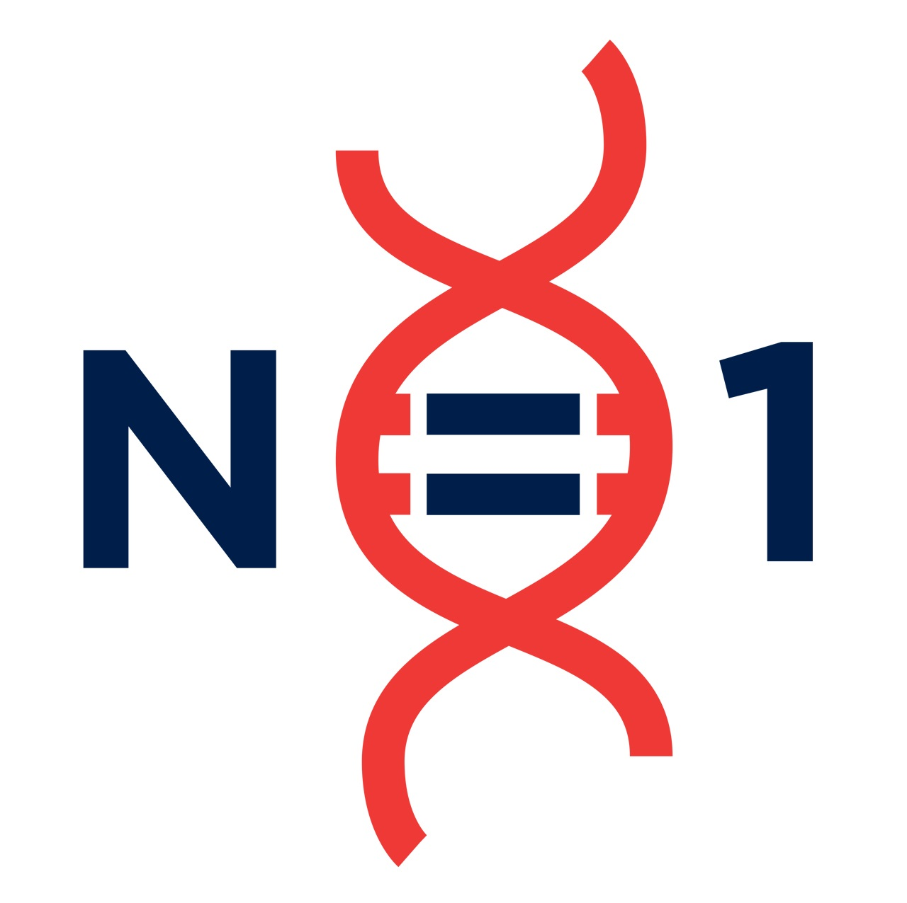

MainThis section is being developed to independently benchmark automated tools for therapeutic variant assessment against a protected manually curated dataset generated by trained N1C assessors.
Companies and developers can submit tools for thorough evaluation, including benchmarking against a dataset of manually assessed variants that is not publicly released and cannot be used for training. For each tool, we will provide a standardized report and publish the results openly through the N1C Gene Registry so that everyone can assess how well the tool performs.
Even if a tool is commercial or behind a paywall, the benchmarking results will remain freely accessible. Developers can then improve their tool and resubmit it for reassessment, allowing performance to be tracked transparently over time.
Automated prioritization tool for therapeutic eligibility assessment of rare genetic variants.
Decision-support tool for comparing possible interventional genomic approaches across variants.
Automated framework for variant interpretation and route-to-therapy prioritization.
Tool under early evaluation for therapeutic assessment and intervention matching.